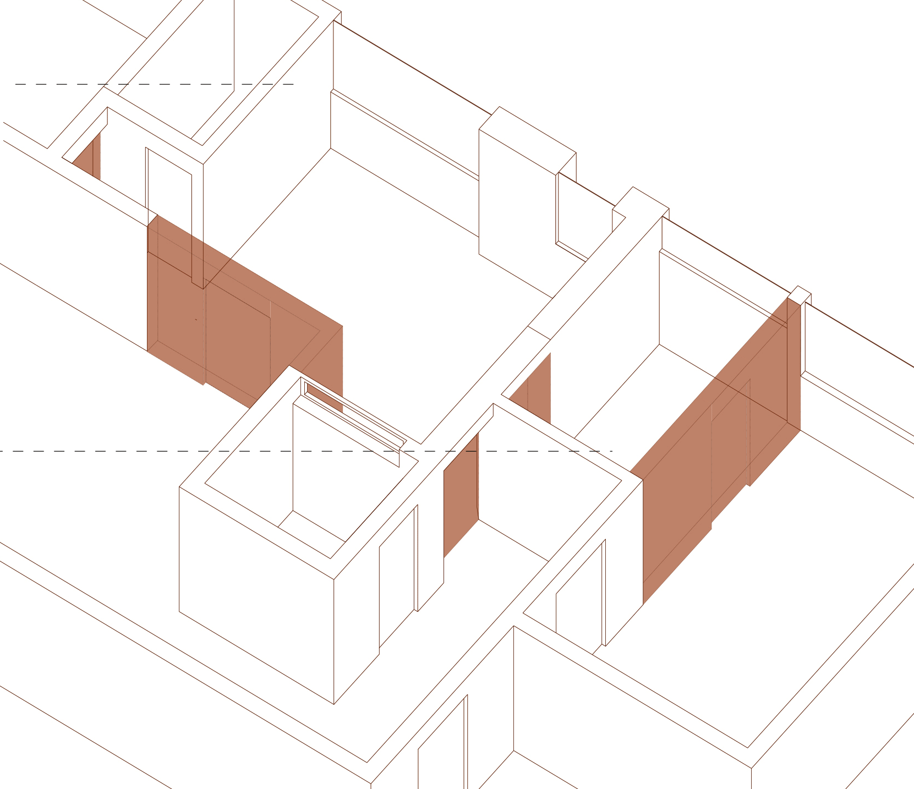
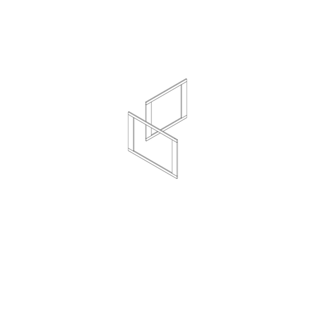
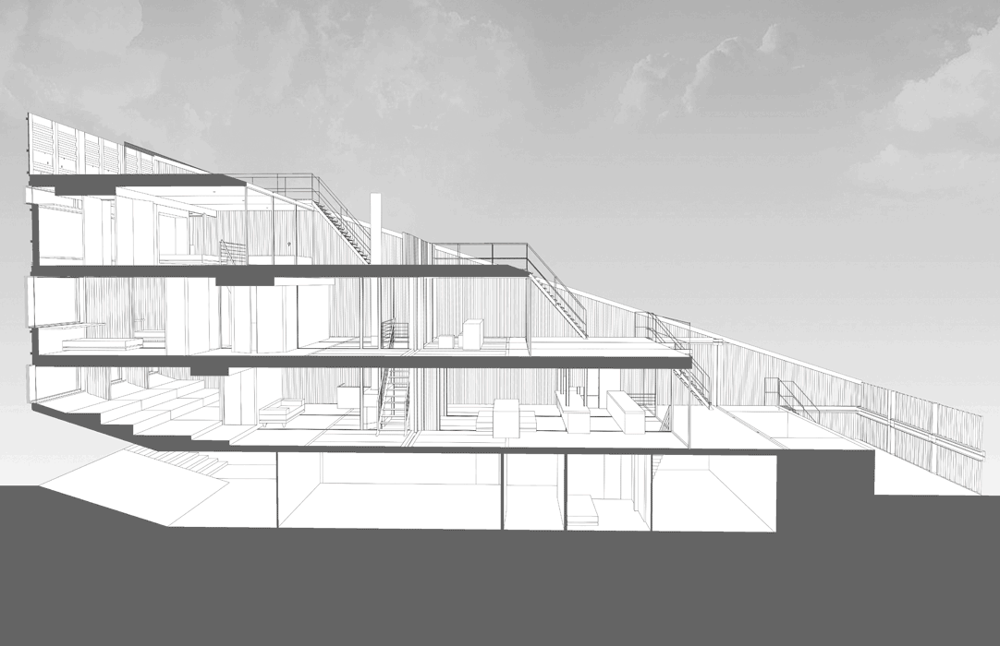
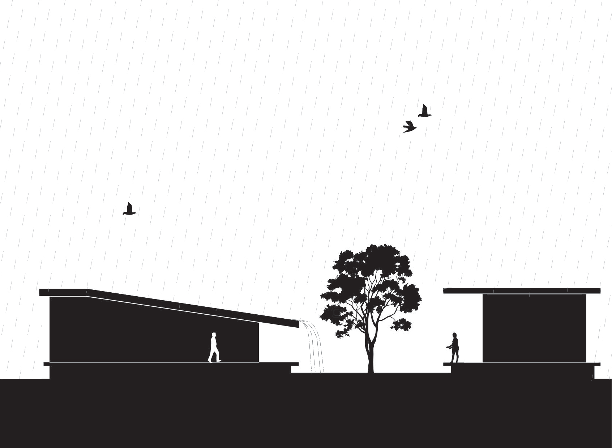
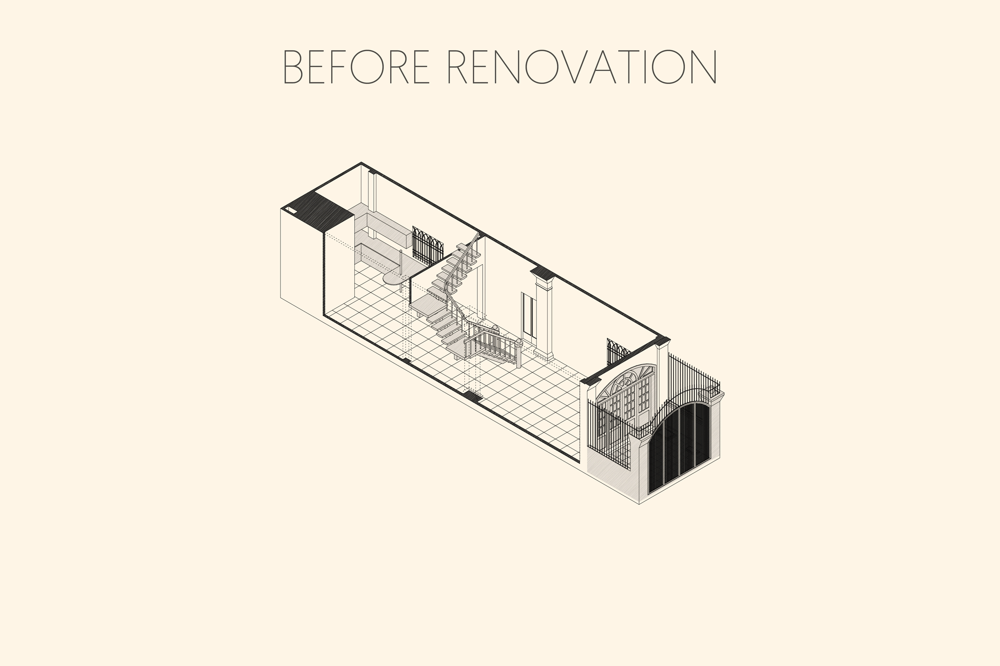
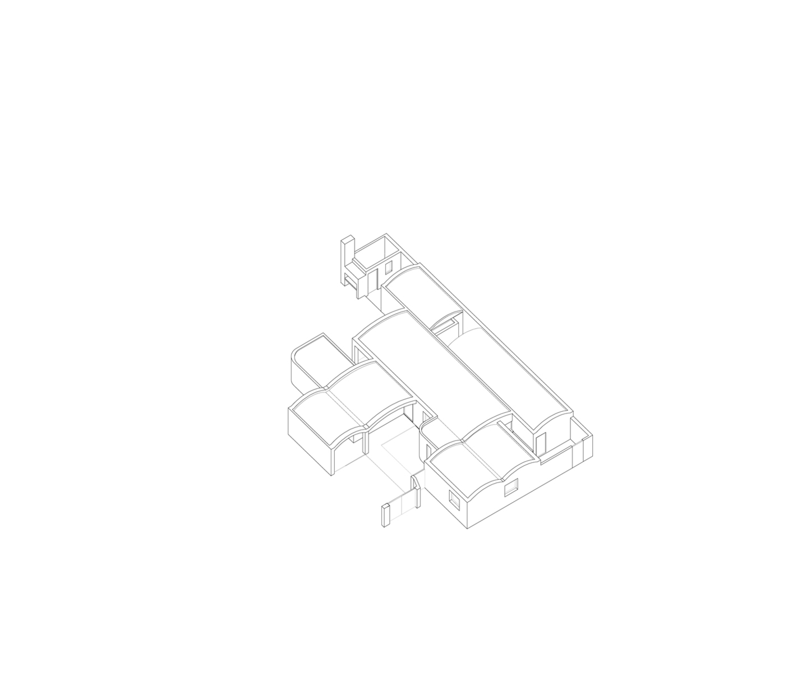

Acessibilidade 
Elaboramos projetos residenciais exclusivos para a idosos, cadeirantes e pessoas com mobilidade reduzida que precisam de um olhar especial nos espaços e mobiliário.  Casa Alegrana / Daniel Moreno Flores + Carla Kienz
Arquitetura
Elaboramos os projetos a partir do levantamento, com fotografias e medidas do local e apresentamos a concepção das primeiras ideias com desenhos à mão livre ou imagens e diagramas, desenvolvendo e especificando até a completa execução da obra com os projetos complementares compatibilizados. Estrutura de madeira em Launchlabs / Stereo Architektur
Consultoria
Prestamos consultoria em soluções construtivas e projetuais, ambientação, definição de materiais, cores e revestimentos, cronograma e orçamento de obra. Casa Carrol/LOT-EK
Estudo de fachada
Estudamos possibilidades para fachadas de muros, casas, prédios e comércios utilizando conceitos de conforto térmico e visual, e sobretudo conceitos estéticos. K.J. Somaiya College for Information Technology / Sameep Padora & Associates
Interiores
Otimizamos os espaços com criatividade para dar maior funcionalidade e conforto. Definimos acabamentos, revestimentos, cores, móveis e objetos de decoração de acordo com as necessidades e possibilidades do cliente.  The Proscenium / INRE Studio
Paisagismo
Fazemos indicações e especificações de
vegetações para ambientes internos e
jardins, levando em consideração o entorno
e a manutenção periódica.
 Monday Monday Floral Art Studio
Monday Monday Floral Art Studio
Restauro
Indicamos serviços e intervenções para restaurar elementos de antigas casas, sobrados e demais edificações de interesse histórico cuja memória deve ser preservada. HQ House / Fernando De Rossa + Virginia Miguel